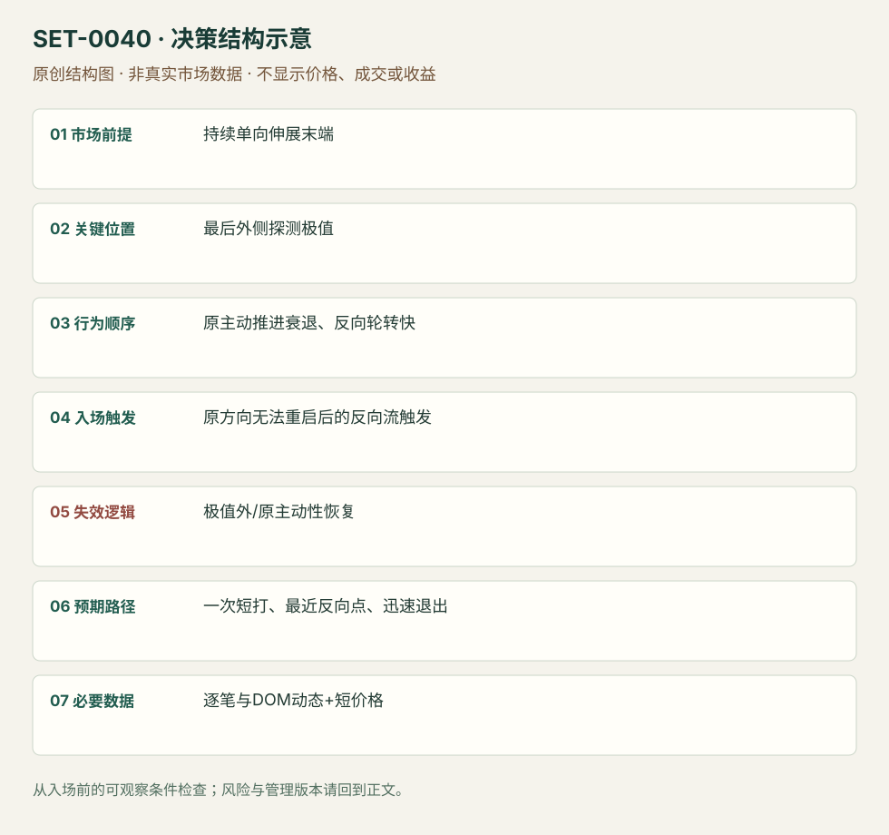

单向伸展末端的主动流耗尽反向短打
Exhaustion-flow Fade Scalp · SET-0040 · reviewed · v1.0.0
盈利证据：not_established。审查范围与来源版本见第13节；未知字段保留缺失原因。
1. 名称与快速概览
长段单向伸展末端，最后一次尝试后原主动方再不能推进、反向轮转变快；捕捉短促反向退出流。目标小、判断错立即撤，而不是预言全天顶部。
记录口径：PA supporting；必要数据 trade_prints、DOM、OHLC。名称性质：编辑性描述名，英文保留来源术语以便检索。reviewed 只表示本条规则与证据记录审查通过，盈利状态为 not_established。
2. 本质与行为假说
耗尽看主动参与或推进能力衰退，吸收看有很多主动成交却价格不走。可同时出现，但两种证据不能用同一句“大单”混写。
3. 适用市场与环境
来源GBP/USD明显伸展末端；Jigsaw泛期货教育。产品厚薄、最小跳与成本决定短打是否可执行，新闻驱动持续趋势慎用。
来源实用市场：GBP/USD（原场所/合约未确认）、期货（Jigsaw教育规则）。
Session：来源期货执行片段，具体时区未知；只在当前计划session短打，结束前平仓，不使用多日价值回归目标。
跨市场：本版不主张已经验证的跨市场迁移；更换市场必须重定数据来源、流动性与session。
4. 出现前的观察清单
识别伸展和已知外侧位置，记录此前主动成交速度；定义最后尝试极值、反向确认和首目标。没有DOM/逐笔不能宣称已观察主动耗尽。
5. 形成过程与状态转换
持续单向 → 最后外侧探测 → 原主动买入/卖出不足以续推 → 反向轮转加速 → 原方向重启失败 → 一次短打。
6. Entry trigger 与执行方式
来源在上冲后快速下转、lift offer能力消失时空；价格棒确认是更晚代理，不能声称和原DOM入口同价。一个尝试只一次，不连续反向补仓。
7. Invalidation 与止损逻辑
最后探测极值外，或原方向即时恢复主动推进先撤；精确距离依产品。若短目标无法覆盖点差/滑点，不因图好看下单。
8. Exit、target 与 trade management
原文一clip、一次尝试、scalp；以最近反向拍卖点和速度衰退退出。本库不填通用2–3tick目标，Jigsaw的ES教育距离不是全市场常数。
9. 常见 variations
上下耗尽对称；Footprint相邻价成交骤减是观察版本。没有主动流支持的三推楔形仍是0007，不把图形名称当本条的数据证据。
10. 失败方式与不交易条件
只有停顿但原主动方很快回来；吸收不断后最终突破；目标太小成本大；看静态量就声称速度改变；把短打持成趋势逆向。
11. 与相近 setups 的区别
12. 图表与案例解读
已看GBP伸展图，明确最后外侧尖峰和后续回落；流的速度/参与变化仅来自文字，没有视频核对，条目保留这一界限。
- [VIS-000042] Trading Exhaustion Move In British Pound - on the left, H1 timeframe on the right, extended move. Move on the right is vertical, with first red candle signalling the top.；定位：GBP exhaustion chart。最后尖峰被作者圈出，下轮无法再上推；静态图仅给价格顺序，不能单独证明lift offer消失。 验证：chart_viewed。

本地原创示意（VIS-000097，非真实市场数据）：

小屏阅读可打开原尺寸示意图并缩放。

此图用于对照识别顺序与风险定义；不计入真实案例覆盖率。
视觉材料元数据与查看范围
- VIS-000042 · real_source_chart / structure_and_trigger / chart_viewed
品种：GBP/USD期货；日期：未知/不适用；周期：未知/不适用；时区：未知/不适用
日期未在图中核对；周期未在图中核对；时区未在图中核对；来源图表不是成交审计 - VIS-000097 · synthetic_structure_diagram / illustration_only / generated_not_market_evidence
品种：未知/不适用；日期：未知/不适用；周期：未知/不适用；时区：未知/不适用
无真实品种、日期或价格：这是结构示意
13. 证据、分歧与未知项
Axia与Jigsaw解释来自不同家族，支持耗尽与吸收的区别和短打思路；没有独立同参数收益检验。
- [EVD-000080] Axia Futures，《2 Ways To Scalp The Exhaustion Move》，SRC-0032；定位：GBP exhaustion: last flick / cannot lift offer / one clip。支持：单向延伸后最后上冲，转下很快且无法再lift offer，反向短打一次；不是等待广泛趋势反转。
- [EVD-000081] Peter Davies，《Practical Application of Order Flow, Part 2》，SRC-0002；定位：PDF页序9–11 reversal recap。支持：区分大量主动成交被吸收和主动参与者越来越少的耗尽；反向确认后只做很短距离。
14. 可用于复盘的检查表
- ☐ 下单前的前提可核对：持续单向伸展末端
- ☐ 事前标记位置：最后外侧探测极值
- ☐ 行为按顺序出现：原主动推进衰退、反向轮转快
- ☐ 实际触发符合选定版本：原方向无法重启后的反向流触发
- ☐ 事先写明本次否定条件：极值外/原主动性恢复
- ☐ 目标/路径只用当时已知信息：一次短打、最近反向点、迅速退出
- ☐ 数据满足 逐笔与DOM动态+短价格；记录时间、点差、滑点、队列和未成交
- ☐ 记录截止平仓及规则偏离；正常亏损不事后改成“未成立”
15. 后续验证问题
耗尽的交易数与成交量哪个更稳？静态Footprint代理损失多少时效？同品种不同深度条件下成本可否覆盖？
双向相关导航
- SET-0003 关键位置吸收后的反转 耗尽关注主动冲击减少；本条关注大量主动冲击仍无法推进。
- SET-0012 连续推进后的分数回撤反向短交易 订单流耗尽要求成交/梯级变化，本条仅观察价格且目标是部分回撤。
- SET-0045 冰山受阻、流转向与弱冲洗后的再拍卖 0045 必须先有冰山、卖压转换和弱冲洗的多段序列，本条只需末端耗尽短打。